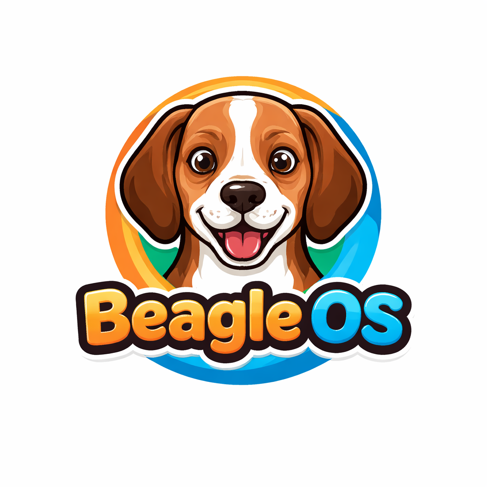

Beagle OS
Configure how Proxmox VM pages should resolve the matching Beagle installer and host health endpoints.
Supported placeholders: {node}, {vmid}, {host}. By default the active VM page downloads its own preseeded USB installer from the local Proxmox host.
Used by the Beagle profile dialog to jump from a VM view into the host-side Beagle control plane status.